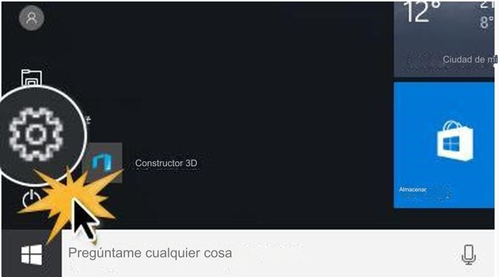
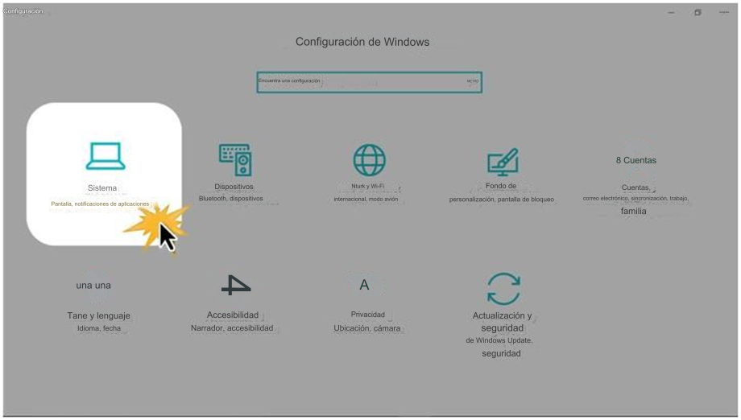

Paso 1:
En la barra de tareas en la parte inferior de la pantalla, haga clic en el ícono de Windows para acceder al menú Inicio, luego seleccione el engranaje para acceder a la aplicación Configuración

Paso 2:
Su dispositivos configuración menú se abrirá. En las opciones que aparecen , haga clic en Sistema

Paso 3:
En el lado izquierdo de la pantalla, haga clic en Aplicaciones y características opción.
Paso 4:
En el lado derecho de la pantalla puedes ver todas las aplicaciones que tienes instalado en tu computadora. Haga clic en la aplicación que desea eliminar y luego seleccione Desinstalar